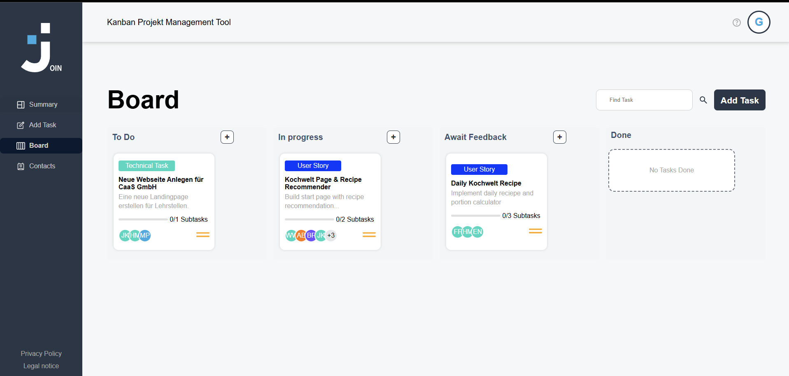
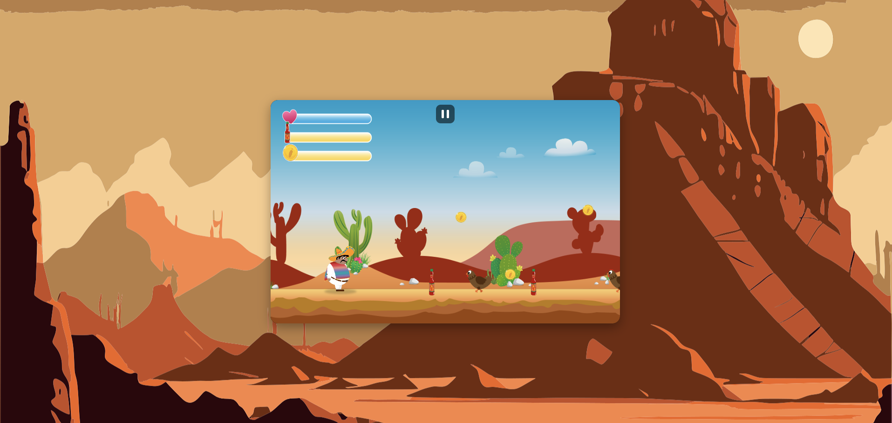

Justin Kamionka
Frontend Developer
Über mich
Mein Weg in die Softwareentwicklung begann nicht im Hörsaal, sondern am eigenen Rechner: Zeile für Zeile Code schreiben, Dinge kaputt machen und wieder reparieren, bis sie funktionieren. Über die Developer Akademie hat mich diese Neugier zum Frontend-Development geführt, wo ich gelernt habe, aus einem Design tatsächlich ein funktionierendes Stück Software zu bauen. Am meisten reizt mich dabei der Moment, in dem aus einzelnen HTML-Elementen, CSS-Regeln und JavaScript-Logik eine Oberfläche entsteht, die sich für Nutzer:innen einfach richtig anfühlt.
-
Ich bin offen für Remote-Tätigkeiten in ganz Deutschland und ebenso für einen Umzug, wenn Aufgabe und Team passen. Klare, direkte Kommunikation ist mir dabei wichtiger als ein fester Schreibtisch im Büro.
-
Neue Frameworks und Tools schrecken mich nicht ab - im Gegenteil: Stoße ich beim Bauen eines Projekts an eine Grenze, ist das für mich der Startpunkt, mir eine neue Technologie anzueignen. Aktuell vertiefe ich mein Verständnis von TypeScript und Angular, weil sich damit größere Projekte spürbar stabiler entwickeln lassen.
-
An einem Bug arbeite ich mich lieber einmal gründlich durch, als ihn mit einem schnellen Hack zu übertünchen. Bevor ich Code schreibe, versuche ich das eigentliche Problem zu verstehen - oft reicht schon eine saubere Skizze der Datenstruktur oder des Ablaufs, um die einfachste statt nur die erstbeste Lösung zu finden.

Meine Skills
Die Icons oben zeigen die Technologien, mit denen ich in meinen Projekten regelmäßig arbeite - von HTML, CSS und JavaScript über TypeScript und Angular bis hin zu Supabase als Backend für Datenbank und Authentifizierung. Genauso selbstverständlich gehören Git zur Versionskontrolle und die Arbeit nach Scrum für mich dazu.
Auf der Suche nach einer weiteren Fähigkeit?
Fehlt hier eine Technologie, die Sie suchen? Sprechen Sie mich gerne an - jedes der oben gezeigten Werkzeuge habe ich mir selbst erarbeitet, und mit dem nächsten tue ich mir genauso wenig schwer.
Kontaktieren Sie michPortfolio
Entdecken Sie hier eine Auswahl meiner Projekte - interagieren Sie damit, um meine Fähigkeiten in Aktion zu sehen.


Fügen Sie hier ein Zitat eines ehemaligen Kollegen oder Teampartners ein. Was hat diese Person an der Zusammenarbeit mit Ihnen besonders geschätzt?
Kontakt
Sie haben ein Problem zu lösen?
Ob es um eine neue Website, die Weiterentwicklung eines bestehenden Frontends oder ein Bugfixing-Projekt geht: Schreiben Sie mir kurz, worum es geht, und ich melde mich zeitnah mit einer ehrlichen Einschätzung zurück, ob und wie ich weiterhelfen kann.
Suchen Sie einen Frontend-Entwickler? Kontaktieren Sie mich!